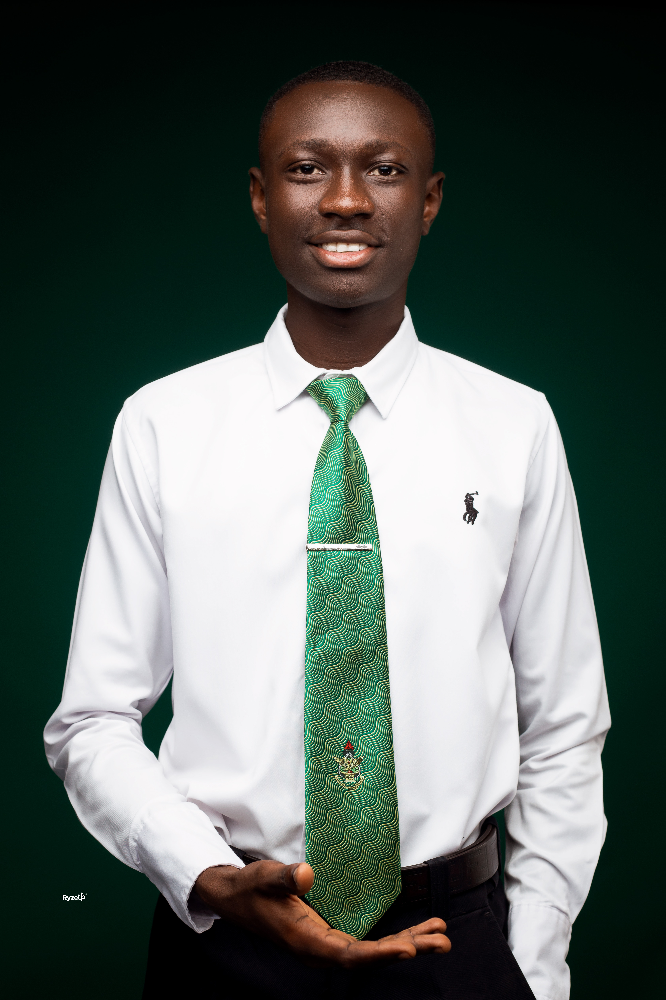
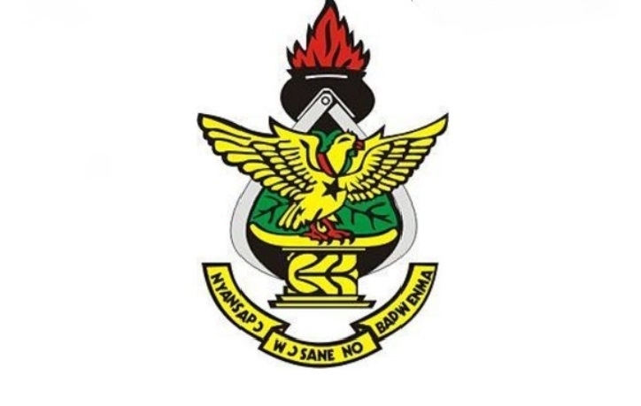
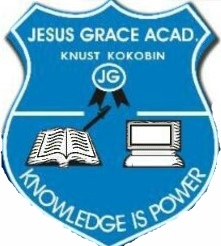

OSEI TUTU DICKSON

I am Osei Tutu Dickson, a student leader who is passionate about students and making a positive impact in the lives of others. Currently serving as the University Students' Association of Ghana, USAG Representative for Kwame Nkrumah University of Science and Technology, KNUST and Organizer for Amanadehyee-KNUST. Experienced with leading a diverse group of students as well as facilitating dialogues in small groups. I am a confident, organized, and motivated student leader who has passion for helping others.
I am a natural leader who knows how to motivate and inspire others to reach their goals. I am also a good listener and communicator who is able to make sound decisions in challenging situations. My strengths include problem solving, decision making, and collaboration. I am an enthusiastic and dedicated leader and I take pride in my ability to effectively communicate and collaborate with my peers and mentors. I am a creative problem solver who is driven by results and committed to making meaningful change. I strive to create an inclusive and welcoming atmosphere that encourages all students to feel safe and valued. I am committed to improving the overall success and well-being of the student body.

BSc. Computer Science
Kwame Nkrumah University of Science and Technology, KNUST
Kumasi, Ghana
January 2022
General Science
Prempeh College
Kumasi,
Ghana
2018 to 2021

Basic School
Jesus Grace Academy
Kumasi, Ghana
2018
*Organization
*Communication Skills
*Crisis Management
*Teamwork
*Cultural Sensitivity
*Plan Institutional Strategies
*Bilingual: English / Twi
*Counseling and Advice